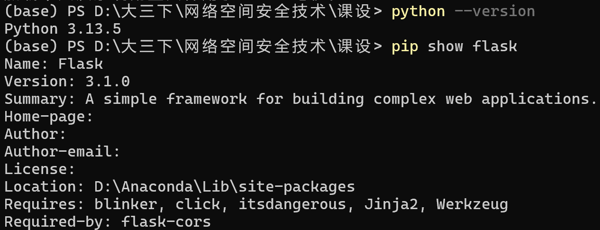
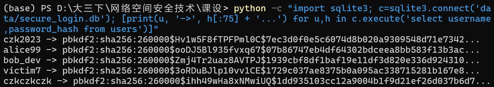
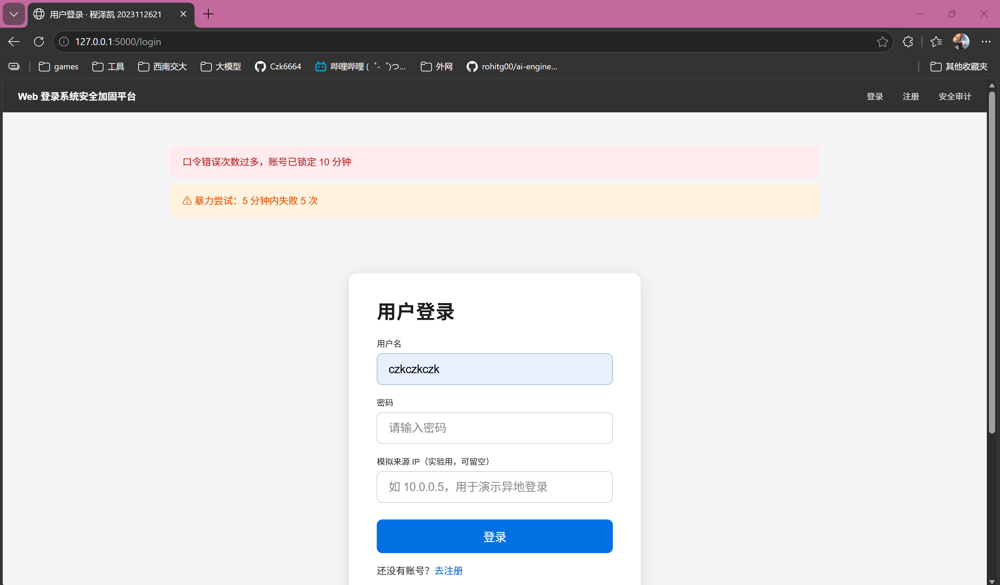
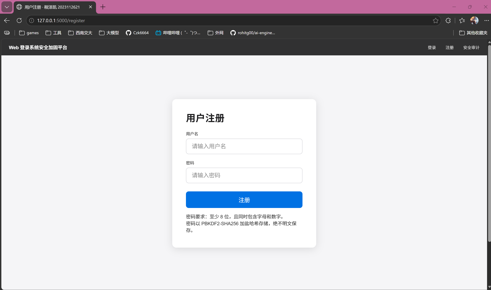
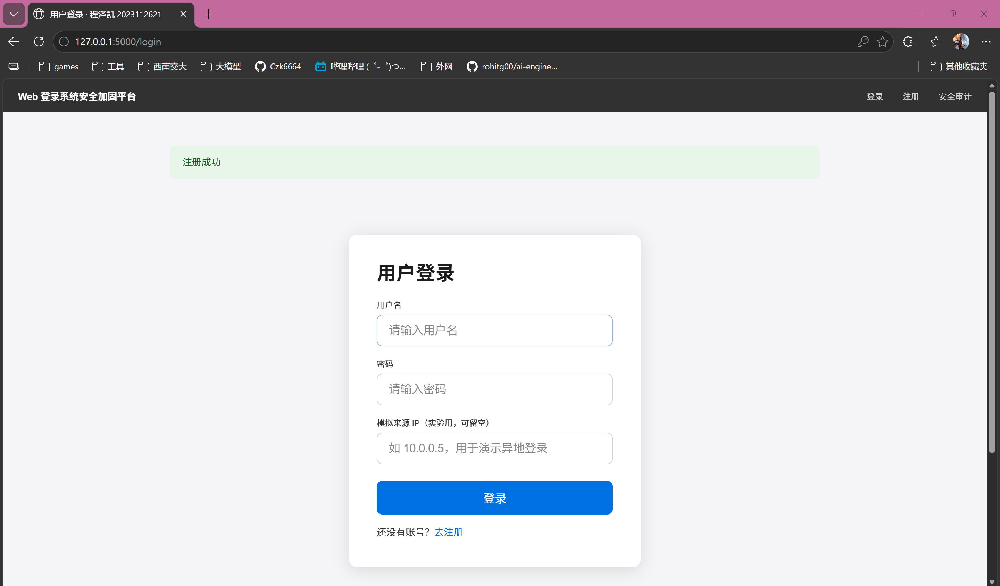
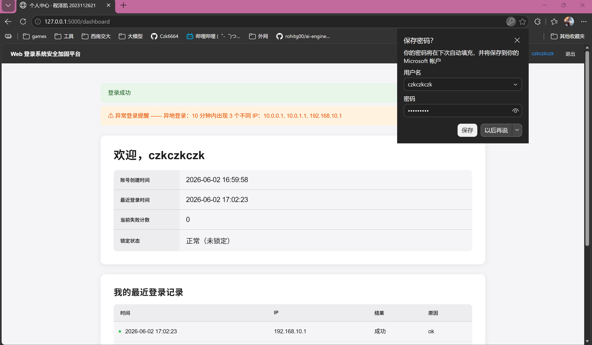
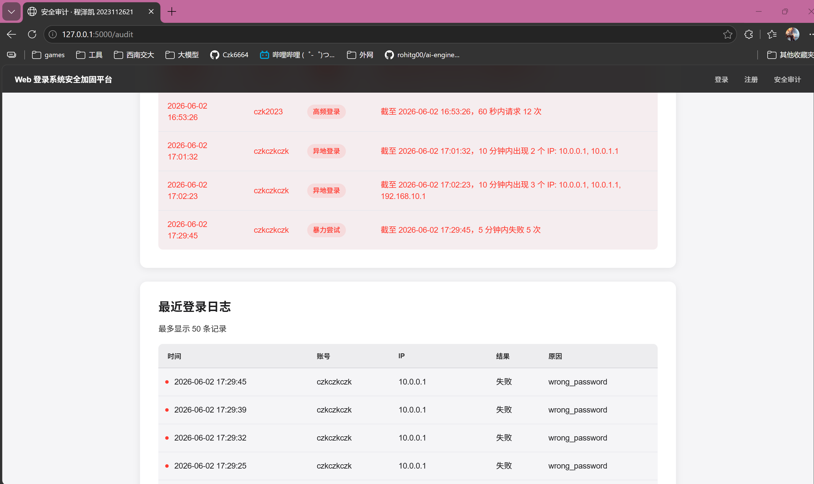
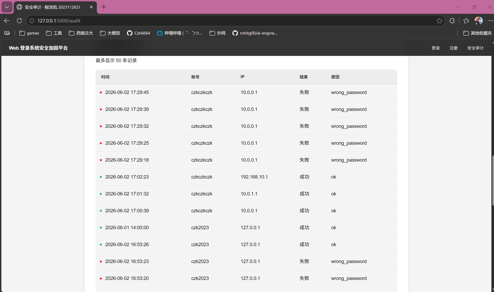

Web 登录系统安全加固
与审计日志设计
计算机类 2023 级
本地授权环境实验
项目背景：登录入口是 Web 安全的第一道关口
本设计不是网络安全综述，而是围绕可运行登录系统做安全加固。
在注册/登录流程中加入口令哈希、失败限制、账号锁定、日志记录、异常审计和告警输出，并用本人构造的数据与脚本验证效果。
实验环境与合规边界：所有数据均为本人本地模拟
环境轻量、可复现，便于答辩现场修改参数后重新运行。

需求覆盖：7 项必做功能均落到具体代码模块
把任务书要求映射到 app.py、security.py、db.py 与 audit.py。
| 功能要求 | 实现位置 | 状态 |
|---|---|---|
| 用户注册 | app.py / security.register_user | 已实现 |
| 用户登录 | app.py / security.authenticate | 已实现 |
| 密码哈希存储 | security.hash_password | 已实现 |
| 失败计数 | security.count_recent_failures | 已实现 |
| 账号临时锁定 | locked_until 字段 | 已实现 |
| 登录日志记录 | db.add_login_log / login_logs | 已实现 |
| 异常登录提醒 | audit.detect_realtime | 已实现 |
答辩时可以按这一页解释：每个判断分支对应哪段代码、哪张表、哪条测试。
技术方案：Flask + SQLite 的五层安全闭环
配置层集中阈值，认证与审计分离，日志贯穿全流程。
config.py
db.py
security.py
audit.py
app.py / templates
用户登录认证流程：每个分支都有日志证据
查询用户、判断锁定、校验哈希、记录成功或失败，并触发实时异常检测。
用户名/口令
users 表
是否锁定
密码哈希
进入首页
检测
密码哈希存储：数据库中不保存任何明文口令
PBKDF2-SHA256 + 26 万次迭代 + 随机盐，降低数据库泄露后的口令风险。

证据点：截图中只出现 pbkdf2:sha256 前缀和长哈希值，没有任何明文口令。
失败限制与账号锁定：暴力尝试会被自动降速
本人阈值：5 分钟内失败 ≥ 5 次，锁定账号 10 分钟。
次数 +1
失败 ≥ 5？
locked_until
locked
临时锁定

异常审计规则：从登录日志中识别四类异常行为
规则由本人设计并集中配置，答辩时可修改阈值重新验证。
审计流程：读取 login_logs → 按时间窗口聚合 → 匹配规则 → 写入 audit_alerts → 页面输出告警
Web 页面演示：注册、登录与实时异常提醒
页面不是摆设，登录成功后仍会显示审计模块返回的安全提醒。



实验数据与审计输出：告警和日志均来自本机运行结果
模拟数据覆盖暴力尝试、异地登录、非工作时间和高频登录。


测试结果：8 个用例，18 项断言全部通过
自动化测试每个用例前重建独立测试库，避免污染演示数据库。
注册 + 哈希存储、正确登录、连续失败锁定、锁定期拒绝登录、异地登录检测、非工作时间登录检测、高频登录检测、全量审计汇总。
结论：系统不是只跑通登录，而是完成了认证、限制、留痕、审计、处置的安全闭环。
总结：本人完成了一个可演示、可审计、可修改规则的小型安全项目
重点价值在于把登录认证和安全审计做成了闭环。
我实现的不是一个普通登录页面，而是一个能记录证据、识别异常并输出审计结果的 Web 登录安全加固系统。